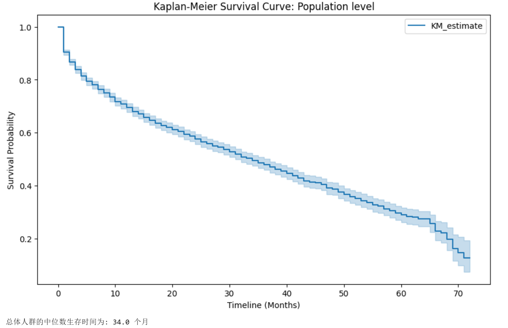
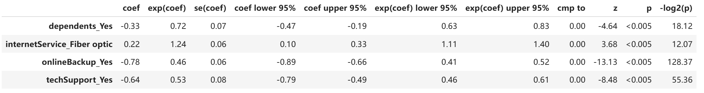
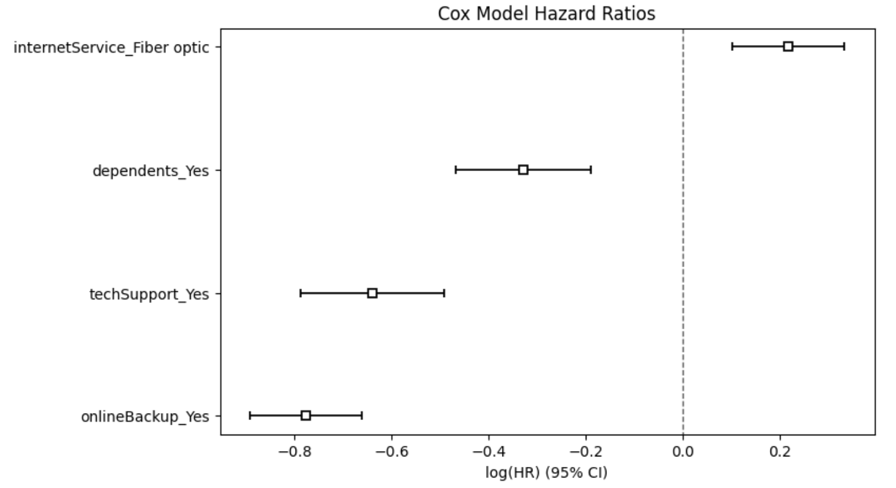
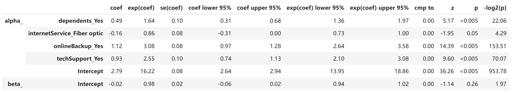

电信客户流失预测：基于多维生存分析的深度探索与模型评估
作者：David 大数据分析软件与应用 Project 1 - Q2 Task 2
1. 引言与研究背景
在竞争激烈的电信行业中，获客成本往往远高于留存成本。传统的客户流失预测（如逻辑回归、随机森林）通常只能回答“客户是否会流失”，却无法回答一个更为关键的业务问题：“客户在流失前还能存留多久？”
为了精准把握客户生命周期，本项目引入了在医学和可靠性工程中广泛使用的生存分析方法。通过分析 IBM 提供的开源电信客户流失数据集，本文旨在量化不同业务特征对客户在网时长的动态影响，为精准营销和客户挽留策略提供数据支撑。
2. 数据准备与实验设计
生存分析的核心在于处理截尾数据——即在观察期结束时，那些尚未发生流失的客户数据。为了确保分析的业务针对性，本研究对原始数据进行了精细化过滤：
- 目标群体锁定：我们排除了长期合约用户，将分析范围严格限制在“按月付费且已开通互联网服务”的核心活跃用户群体中，因为这部分用户的流失风险最高，业务干预价值最大。
- 变量定义：经过清洗，最终纳入分析的有效样本量为 3351 例。我们将 tenure（客户在网月数）定义为生存时间（Time），将 churn 定义为事件指示器（1=流失，0=留存）。
3. 技术实现方案与数据工程
本项目的底层数据处理与统计建模架构主要基于 Apache Spark 与 Python 的 Lifelines 生存分析库构建。完整的代码处理流程如下：
- Step 1: 数据摄取与强类型定义
为了避免 Spark 在自动推断模式（inferSchema）下将某些数值字段（如总费用 TotalCharges）错误识别为字符串，我们在 PySpark 中显式构建了 StructType 模式。这保证了数据从源头读取时的数据质量与类型安全，并以此构建了基础的青铜级数据表。
- Step 2: 截尾指示器构建与特征工程
生存分析需要两个核心变量：生存时间 (Time) 与 截尾指示器 (Censor/Event)。在 PySpark 的 DataFrame API 中，我们将原始的 tenure（在网月数）直接映射为生存时间；并通过条件转换（when(col('churnString') == 'Yes', 1).otherwise(0)），将文本标签转化为数值型的截尾指示器。同时，通过 filter 算子精准过滤出“按月付费”且“已开通互联网服务”的核心高危群体，生成用于建模的白银级数据表，有效样本量为 3351 例。
- Step 3: 独热编码与多维拟合
由于 Cox 和 AFT 多变量模型无法直接处理类别型特征，我们通过 Pandas 的 get_dummies 方法对诸如“网络类型”、“是否包含技术支持”等特征进行了独热编码。最后，将处理好的高维特征矩阵输入至 lifelines 库的 KaplanMeierFitter、CoxPHFitter 和 LogLogisticAFTFitter 估算器中，进行不同参数假设下的生存率推演。
4. 全局流失趋势：Kaplan-Meier 非参数估计
在深入多变量建模之前，我们首先采用非参数的 Kaplan-Meier (KM) 估计法，绘制了目标人群的整体生存概率曲线，以建立对数据的直观基线认知。

【洞察分析】
- 中位数生存期：在不考虑任何特征差异的情况下，该群体的中位数生存时间为 34.0 个月。这意味着在第 34 个月时，已有 50% 的按月付费互联网用户选择了退网。
- 高风险窗口期：观察 KM 曲线的斜率可以发现，生存概率并非匀速下降。在客户入网的前 10 个月内，曲线呈现出极为陡峭的阶梯式下滑，这是客户流失的“绝对高发期”；当在网时长跨越 24 个月后，曲线趋于平缓，表明客户进入了相对稳定的忠诚期。
5. 探寻流失驱动力：Cox 比例风险模型
KM 曲线只能展示整体趋势，为了评估多个分类特征对流失率的独立且综合的影响，我们拟合了半参数的 Cox 比例风险模型。该模型的 Concordance 指数为 0.64，表明模型具备中等水平的区分与预测能力。
通过对模型参数的显著性检验（所有列出的特征 p-value < 0.005），我们提取出以下关键的风险与保护因素：


【特征影响量化】
- 核心保护因素：
- 在线备份：exp(coef) = 0.46。这是一个极强的留存信号，开通该服务的客户，其流失风险显著下降了 54%。
- 技术支持：exp(coef) = 0.53。享有专属技术支持的客户，流失风险降低了 47%。这表明优秀的服务体验能有效建立客户黏性。
- 家庭结构：exp(coef) = 0.72。有家属的客户群体稳定性更高，风险降低了 28%，可能与家庭共享宽带的转换成本较高有关。
- 核心风险因素：
- 光纤网络：exp(coef) = 1.24。相比于使用基础 DSL 网络的用户，光纤用户的流失风险反而高出了 24%。这通常暗示了该细分市场存在激烈竞品挖角，或者现有光纤产品的定价/质量不符客户预期。
6. 生存时间预测与模型反思：AFT 模型的局限性
不同于 Cox 模型评估相对风险概率，加速失效时间模型是一种全参数模型，它假设特征会按比例直接加速或延缓客户的预期存活时间。本项目尝试使用 Log-Logistic 分布进行拟合。

【模型推演与异常剖析】
从特征方向上看，AFT 模型印证了 Cox 模型的结论：在线备份 (exp(coef) = 3.08) 和技术支持 (exp(coef) = 2.55) 能够将客户的预期存活时间大幅延长 2.5 至 3 倍。
然而，在绝对时间的预测上，模型出现了严重的错误：模型预测的整体中位数生存时间高达 1,059,962 个月（约 8.8 万年）。这一数字显然是荒谬的。对比，这个现象出现的可能原因有以下几点：
- 分布假设的重尾特性：Log-Logistic 分布本身在处理包含大量早期截尾数据时容易产生极长的尾部。
- 过度外推：本数据集截取的是“按月付费”群体，其真实生命周期集中在极短的 1-70 个月内。强行用参数化分布拟合这种短期截断数据，导致模型截距被极度放大 (exp(coef) = 16.22)。
- 方法论反思：这一失败尝试极具学术价值。它生动地证明了：在缺乏先验分布确信度、且数据存在严重右侧截断的商业场景中，不强制假设基准生存分布的半参数 Cox 模型，远比全参数的 AFT 模型更加稳健和贴合实际。
7. 数据驱动的业务增长策略
综合多维生存分析的结论，我们向运营与产品团队提出以下切实可行的商业建议：
- 重塑“新客破冰期”干预机制：数据表明前 10 个月是流失的死亡谷。建议将客户关怀资源的 70% 倾斜至新入网的半年内，通过首月回访、3个月账单解读等主动触达，平稳度过高危期。
- 构建“服务生态”留存壁垒：技术支持与在线备份是经过数据验证的免死金牌。建议改变单纯卖宽带的模式，推出“宽带+首年免费在线备份/专属IT支持”的捆绑套餐，通过提高用户的转换成本来锁死客户。
- 启动光纤产品的深度危机排查：针对光纤用户流失风险异常偏高的问题，产品部门需立即展开专项调研，对比竞品的带宽资费，并联合网络工程部门排查该部分用户的网络断线率，以防高端市场的持续流失。